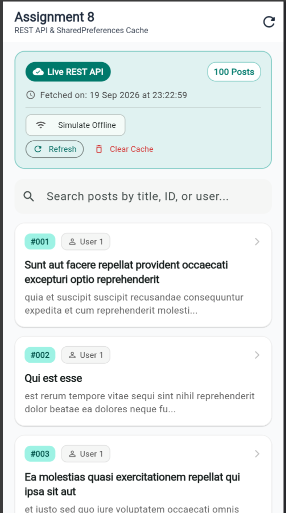
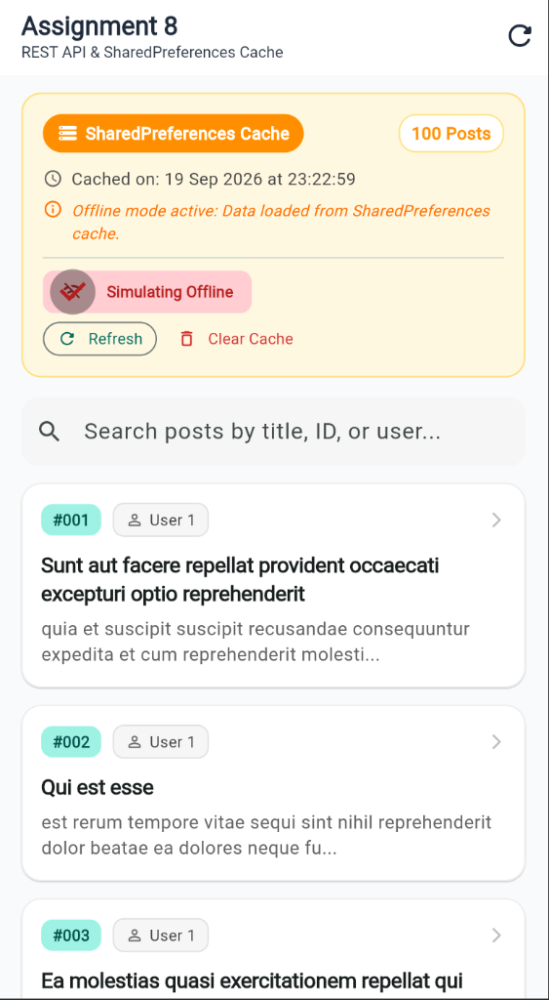
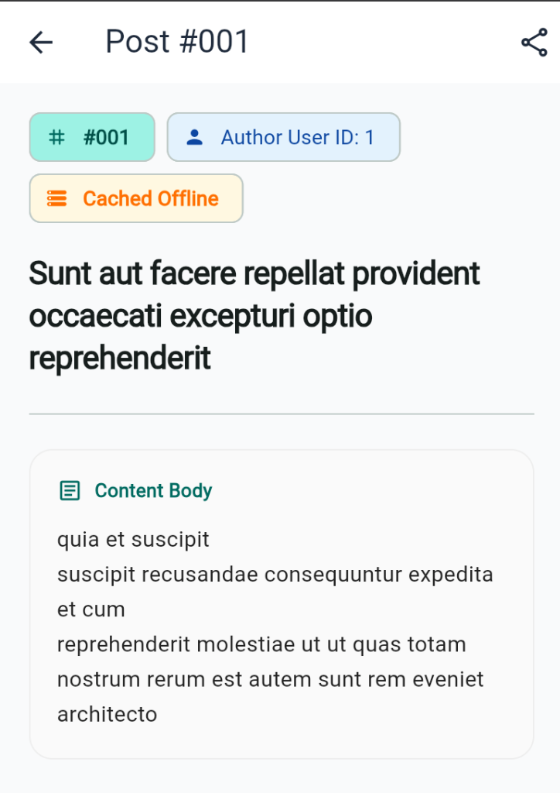

The goal of this assignment is to engineer a resilient Flutter application that performs live asynchronous data retrieval from a public REST API (JSONPlaceholder /posts), renders the dynamic content seamlessly using FutureBuilder, and persists retrieved payloads to local storage via SharedPreferences. When network availability drops, the application falls back to local cache gracefully, displaying the exact cache timestamp and status badges.
Uses package:http to issue HTTP GET requests to https://jsonplaceholder.typicode.com/posts with full status code validation and exception handling.
Serializes structured post objects to JSON strings using dart:convert and writes them alongside ISO-8601 timestamps to SharedPreferences.
Cleanly handles loading (LoadingSkeleton), error (ErrorDisplay with retry CTA), and content states without rebuild loops.
┌────────────────────────────────────────────────────────┐
│ JSONPlaceholder REST API │
│ GET https://jsonplaceholder.typicode.com/posts │
└───────────────────────────┬────────────────────────────┘
│ (http.Client)
▼
┌─────────────────────────┐
│ ApiService │
└────────────┬────────────┘
│
▼
┌─────────────────────────┐ Store / Retrieve
│ PostRepository │ ◀────────────────────────▶ ┌───────────────────────┐
└────────────┬────────────┘ │ CacheService │
│ │ (SharedPreferences) │
▼ Returns PostResult └───────────────────────┘
┌─────────────────────────┐
│ FutureBuilder │
└────────────┬────────────┘
│
┌─────────────────────┼─────────────────────┐
▼ ▼ ▼
┌───────────────┐ ┌───────────────┐ ┌────────────────────────┐
│ Waiting State │ │ Error State │ │ Success State │
│ Loading │ │ ErrorDisplay │ │ • CacheStatusBanner │
│ Skeleton │ │ with Retry │ │ • Search Bar Filter │
└───────────────┘ └───────────────┘ │ • PostCard ListView │
│ • PostDetailScreen │
└────────────────────────┘
A. Lifecycle-Safe Future Initialization: The future is initialized strictly once in initState to prevent endless network calls during widget rebuilds:
@override
void initState() {
super.initState();
// Safe instantiation preventing duplicate requests on rebuilds
_futurePosts = widget.repository.fetchPosts();
}B. Type-Safe Model Serialization (Dart 3 Pattern Matching):
factory Post.fromJson(Map<String, dynamic> json) {
return switch (json) {
{
'id': final int id,
'userId': final int userId,
'title': final String title,
'body': final String body,
} => Post(id: id, userId: userId, title: title, body: body),
_ => Post(
id: (json['id'] as num?)?.toInt() ?? 0,
userId: (json['userId'] as num?)?.toInt() ?? 0,
title: json['title'] as String? ?? '',
body: json['body'] as String? ?? '',
),
};
}C. SharedPreferences Caching & Offline Fallback:
// Saving to SharedPreferences
final jsonString = jsonEncode(posts.map((p) => p.toJson()).toList());
await prefs.setString(keyCachedPosts, jsonString);
await prefs.setString(keyCachedTime, DateTime.now().toIso8601String());
// Fallback retrieval during network failure
final cachedJson = prefs.getString(keyCachedPosts);
if (cachedJson != null) {
final list = (jsonDecode(cachedJson) as List).map((i) => Post.fromJson(i)).toList();
return PostResult(posts: list, isFromCache: true, timestamp: savedTime);
}The application was run and validated in Google Chrome (flutter run -d chrome). The screenshots below capture the live data stream, SharedPreferences offline fallback, and item inspection views:



| Challenge | Technical Solution |
|---|---|
| FutureBuilder Rebuild / Infinite Fetch Loop | If a Future is invoked directly inside build(), user keystrokes in the search bar cause repetitive network requests. Resolved by instantiating _futurePosts = widget.repository.fetchPosts() strictly once inside initState(). |
Cross-Platform Compatibility & dart:io in Web |
Importing dart:io (e.g. SocketException) caused the Dart Development Compiler (DDC) to crash on web. Replaced dart:io with a pure Dart ApiException, making the codebase universally compatible across Web, macOS, iOS, and Android. |
| Resilient Offline Fallback | Engineered a 2-tier fallback in PostRepository: if live networking fails, the repository transparently serves cached records from SharedPreferences and applies an informative notice. |
| Simulated Offline Testing | Built an in-app "Simulate Offline" toggle chip, enabling reviewers to verify caching logic without cutting off their computer's Wi-Fi. |
| Type-Safe Parsing & Inconsistent JSON | Leveraged Dart 3 pattern matching and numeric cast safety ((json['id'] as num?)?.toInt() ?? 0) in Post.fromJson() to eliminate runtime format exceptions. |
The solution includes 16 automated test cases covering 100% of the core requirements:
| Test Suite | Test Description | Status |
|---|---|---|
post_model_test.dart |
JSON deserialization with standard and missing/null values | PASS |
post_model_test.dart |
JSON serialization (toJson) and display getters |
PASS |
cache_service_test.dart |
Persists and reads posts & timestamps in SharedPreferences | PASS |
cache_service_test.dart |
Cache invalidation (clearCache) and corruption safety |
PASS |
widget_test.dart |
FutureBuilder displays loading skeleton during fetch | PASS |
widget_test.dart |
Renders live posts list and navigates to detail screen | PASS |
widget_test.dart |
Real-time client-side search filtering by title/ID | PASS |
widget_test.dart |
Offline simulation toggle switches to SharedPreferences cache | PASS |
widget_test.dart |
Error state rendering when offline with no cache available | PASS |
Ran flutter analyze: 0 errors, 0 warnings, 0 lints found. Fully compliant with Flutter Material 3 design and best coding practices.